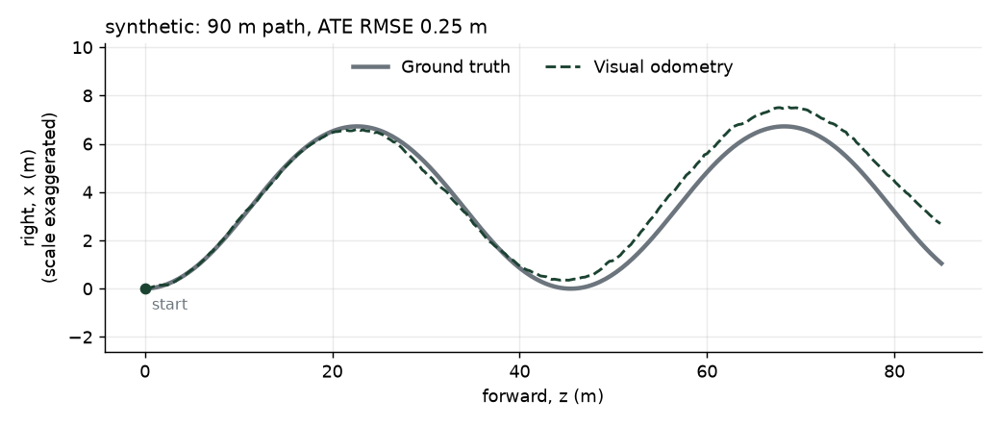
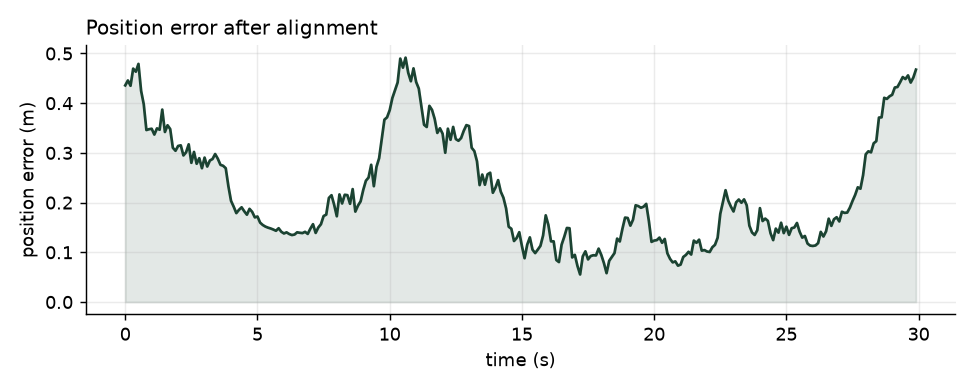
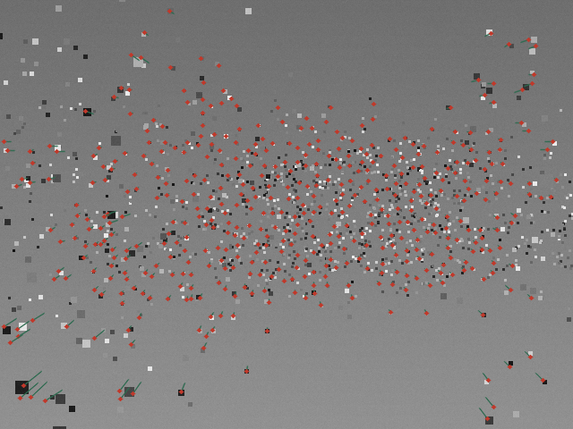

Results on the synthetic sequence
0.25 mATE RMSEabsolute trajectory error over a 90 m path
1.9%Final driftend-point error as a share of distance travelled
0.13°Rotation error per framerelative pose error, RMSE
470Features tracked per frame102 RANSAC inliers on average
The test video is generated with an exact ground-truth path and lens distortion, so every error is measurable. The same code reads TUM RGB-D and KITTI sequences.
Estimated path vs ground truth


How it works
- Calibrate. Checkerboard calibration (Zhang's method) gives focal length, image centre and lens distortion; pixels are undistorted before any geometry.
- Track. Shi-Tomasi corners tracked frame to frame with pyramidal Lucas-Kanade; a forward-backward check drops bad tracks, and new corners are added when fewer than 350 survive.
- Estimate motion. Five-point essential matrix with RANSAC, decomposed into rotation and direction of travel; weak frames fall back to constant velocity.
- Scale and chain. Monocular vision has no metric scale, so each step's length comes from a speed source (ground truth here; an altimeter, wheel odometry or IMU on a robot).
- Change frames. A C++17 library (pybind11 bindings, GoogleTest) converts camera-optical poses to ROS body convention for odometry and TF.
- Score. ATE after best-fit alignment, RPE over 1 and 10 frames, and final drift; CI fails if accuracy drops below the gate.
Tracked features

Red: tracked corners. Green: their motion since the previous frame.
Engineering
- Python package
vnav: camera model, tracker, motion, odometry, metrics, dataset readers, calibration. - C++17 frames library with a CLI, pybind11 bindings and 13 GoogleTest tests.
- ROS2 package
vnav_ros: plays back recorded sequences or subscribes tocamera/image_raw; publishesnav_msgs/Odometry,nav_msgs/Pathand TF. - CI on Ubuntu Linux: C++ tests, 21 Python tests, a full run with an accuracy gate, and a ROS2 Humble build, node test and smoke test.
Limits: monocular only, scale from an external source, no loop closure or IMU fusion; results here are on synthetic data.